События
СобытияВсе события: когда, где и как играть
В игре постоянно идут события. За каждое дают награды — и тебе, и альянсу. Здесь каждое событие разобрано отдельно: что это, когда проходит, куда нажать и как не слить войска.

Особые события
Кнопка справа вверху. Внутри: Битва на выживание, Гонка за эликсиром, Викторина, Король демонов, Поиск вора, Сырная ловушка.

Каждый день
Король демонов (кроме воскресенья) и Битва на выживание. Делай их всегда.
Сырная ловушка
Раз в 2 дня. Время назначают R4 или R5 альянса.

Штурм
Во многих событиях монстра бьют штурмом: один начинает, остальные нажимают «Вступить».
Какое событие когда бывает
Сначала расписание, потом подробности по каждому. Время сервера: оно меньше московского на 5 часов. Новый игровой день начинается в 00:00 на сервере, это 05:00 по Москве.
| Событие | Когда | Сколько длится | Кто запускает |
|---|---|---|---|
| Король демонов | каждый день, кроме воскресенья Колдун — пн и чт · Рейнджер — вт и пт · Воин — ср и сб | весь день, 10 атак | само |
 Теневая скверна Теневая скверна | пн и чт, 4 захода: 00:00, 06:00, 12:00, 18:00 по серверу это 05:00, 11:00, 17:00 и 23:00 МСК | по 3 часа, 5 атак | само |
 Битва на выживание Битва на выживание | каждый день, раунды меняются в 00:00 по серверу (05:00 МСК) открывается со 2-го дня сервера, нужно Святилище 7 | раунды по 4 часа | само |
 Дуэль альянсов Дуэль альянсов | пн — сб | сутки на день темы | само |
 Сырная ловушка Сырная ловушка | раз в 2 дня | 30 минут | R4 / R5 выбирают час |
 Осада нежити Осада нежити | раз в 2 дня, когда альянс накопил 300 000 улик | до 20 волн | R4 / R5 |
 Охотничий бой Охотничий бой | один раз за событие | 5 мин подготовки + 5 волн | R4 / R5 |
 Война королевств Война королевств | суббота | бой 17:00–21:00 МСК | само |
 Королевский переполох Королевский переполох | пятница | 17:00 МСК, 8 часов | само |
 Долина Кристальных Гроздей Долина Кристальных Гроздей | воскресенье, 4 захода | 30 минут | само |
 Улучшение снаряжения Улучшение снаряжения | суббота и воскресенье | одна награда на 2 дня | само |
 Гонка за эликсиром Гонка за эликсиром | каждую неделю: запись с понедельника, в четверг подбор соперника, бой в пятницу — в окно, выбранное при записи: 09:00, 18:00 или 23:00 по серверу это 14:00, 23:00 или 04:00 МСК; участвуют 32 сильнейших альянса сервера, Святилище 15+ | 30 минут | R4 / R5 записывают 20 основных и 10 запасных |
| Завоевание каньона | каждую неделю, на сервере появляется с 3-й недели: запись → подбор (группа из 6 альянсов) → 5 раундов боёв нужно: состоять в альянсе, территория 10+, в альянсе записались хотя бы 15 человек | 5 раундов, бои идут сами | каждый записывается сам |
 Поиск вора Поиск вора | раз в 2 недели, со среды по пятницу в другую неделю на эти дни идёт «Опыт пандемии»; львиные монеты не сгорают до следующего раза | 3 дня | само |
 Блуждающий фантом Блуждающий фантом | срок — в окне события; Святилище 8+ | 1 день | само |
 Опыт пандемии (сиделки) Опыт пандемии (сиделки) | раз в 2 недели, со среды по пятницу — в неделю без «Поиска вора» | 3 дня | само + R4/R5 на босса |
 Торговец-отшельник Торговец-отшельник | срок — в окне события | 7 дней | само |
| Колесо желаний | срок — в окне события | по сроку события | само |
 День охоты Селии День охоты Селиив нём же — Осквернённая графиня | срок — в окне события | по сроку события | само |
| Викторина мудрости | срок — в окне события | по сроку события | само |
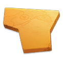 Шахта гномов | срок — в окне события; кирки за задания, задания обновляются в 00:00 по серверу (05:00 МСК) | по сроку события | само |
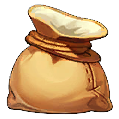 Неожиданная встреча | срок — в окне события; 1 приключение в день бесплатно | по сроку события | само |
Все события на одной странице
Гонка за эликсиром
каждую неделю, бой в пятницу, 30 минутАльянс против альянса, 20 на 20. Захват зданий на отдельной карте.
Поиск вора
раз в 2 недели, 3 дня (ср–пт)Вместо скверны ловишь золотых воров и бьёшь их главаря штурмом.
Сырная ловушка
раз в 2 дня, 30 минутАльянс ловит Крысу в ловушку и бьёт её штурмами.
Король демонов
каждый день, кроме ВсМировой босс: 10 ударов в день. Даёт серверу очки КвК.
Битва на выживание
каждый деньРаунды по 4 часа со своей темой. Соревнуешься с игроками своего уровня.
Викторина
по расписанию игрыВопросы про игру. Ниже — готовые ответы.
Долина Кристальных Гроздей
воскресенье, 4 разаСобирай кристаллы: бей крыс и копай шахты. В конце — «царь горы».
Охотничий бой
по команде R4/R55 волн скверны с боссом после каждой волны.
Блуждающий фантом
1 деньБить огромную Блуждающую скверну, которая гуляет по карте.
Опыт пандемии
3 дняУбить 30 сиделок от 1 до 30 уровня и Докторов-крыс альянсом.
Осада нежити
по команде R4/R5Волны монстров атакуют твой город. Щиты не работают.
Завоевание каньона
каждую неделю, с 3-й недели сервераЗаписался — и бои идут сами. 3 линии, нужно выиграть 2.
Улучшение снаряжения
суббота и воскресеньеУлучшай снаряжение героев — получай награду.
Торговец-отшельник
7 днейМагазин за монеты события. Первый товар всегда бесплатный.

Осквернённая графиня
во время «Дня охоты Селии»Монстр события Селии, 12 уровней. Бьют только штурмом альянса.
Колесо желаний
лимит попыток в деньРулетка за «Монеты желаний». Рядом бывает «Благословенное колесо».

День охоты Селии
по сроку событияБей скверну 1–20 уровня штурмами, получай «Сундук Селии».
Теневая скверна
пн и чт, 4 заходаОтдельное событие, не обычный босс: по 3 часа, 5 атак вместо 10.
Шахта гномов
кирки раз в деньКопаешь этажи. Перед раскопкой выбери награду этажа.
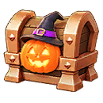
Неожиданная встреча
1 раз в день бесплатноПриключение за алмазы. Больше 4 сундуков копить нельзя.
Война королевств (КвК)
суббота 17:00 МСКНаш сервер против чужого. Отдельный раздел.

Праздничные события
на праздникиХэллоуин, праздник луны, пираты, Пасха, банкет, Рождество и Новый год.
Дуэль альянсов
пн — сбАльянс против альянса, 6 тем. Отдельный раздел.
Гонка за эликсиром
Два альянса по 20 человек попадают на отдельную карту. Захватываешь здания — капают очки. Через 30 минут побеждает тот, у кого больше очков. Солдаты здесь не погибают: после боя все войска возвращаются как были. Победа во время КвК даёт нашему серверу 50 000 очков.
Где найти — по шагам

Значок «Особое событие»
Справа на главном экране, в столбике круглых значков — второй сверху (с галочкой на планшете). Откроется окно «Событие» с вкладками сверху.

Вкладка «Гонка за эликсиром»
Первая вкладка. В окне: «Команда А» / «Команда Б», сколько осталось до конца регистрации, ниже — наш альянс против соперника. Справа «Магазин», «Правила», «История», «Участники», слева «Журнал».
Когда до боя остаётся 5 минут, внизу появляется кнопка «В бой!» — она переносит на карту события. Записывают лидеры кнопками «Регистрация», «Выбор времени», «Выбор участников».
Как попасть
Лидеры альянса выбирают 20 основных участников и 10 запасных. Основные заходят первыми. После записи список закрывается. Обычно заявки собирают до четверга.
Пригодятся, если лечебных палаток не хватит.
Справа вверху «Особые события» → «Гонка за эликсиром». Тебя перенесёт на карту в свою зону: наши — синие, враги — красные. В своей зоне тебя не трогают.
Соперника игра подбирает по общей мощи записанных участников (берётся самая большая мощь, какая у них когда-либо была).

Окно игры «Руководство»: наши входят с запада (синие), враги — с востока (красные).
Что происходит по минутам
Заходим в свои зоны. Нас никто не может атаковать.
Открыты Алхимические мастерские, Врата миграции, Наблюдательный пункт, Лечебные палатки.
В центре открываются Замок эликсира, Реликвии войны, Проклятый алтарь.
Появляются Лагеря с травами — сбор тоже даёт очки.
Что дают здания
Это окно самой игры: в окне события справа кнопка «Правила» → вкладка «Здание». «Альянс» — сколько очков в секунду здание даёт альянсу, «Личное» — тебе, пока твой отряд в нём.
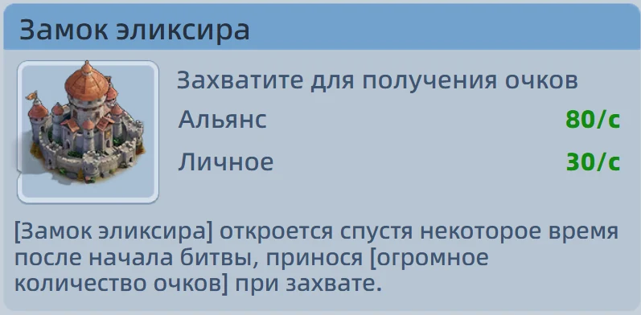
Замок эликсира
В центре, открывается на 10-й минуте. Даёт больше всего очков. К 10-й минуте все сильные должны быть у центра.
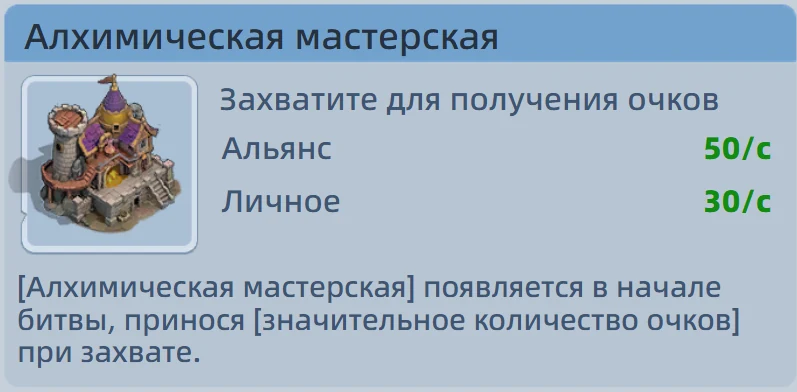
Алхимическая мастерская
Две штуки, у входов каждого альянса. Дают много очков постоянно — берём первыми.
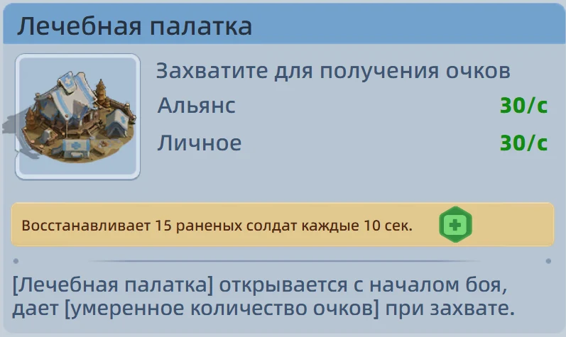
Лечебная палатка
4 штуки. Немного очков, но главное — лечит 15 твоих раненых каждые 10 секунд. Вылеченных забирай слева внизу, нажимая зелёную кнопку.
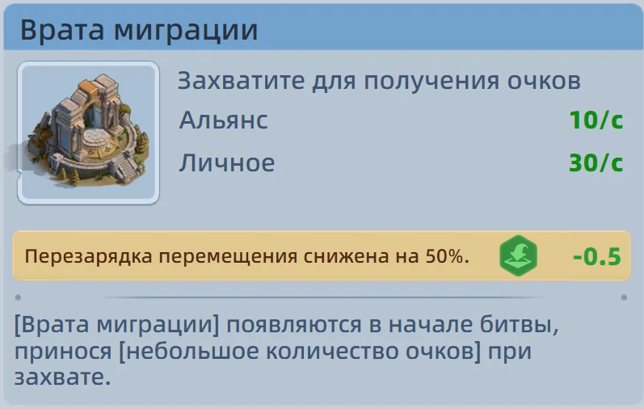
Врата миграции
Открываются в начале битвы. Пока они наши, перезарядка переезда по карте вдвое короче.
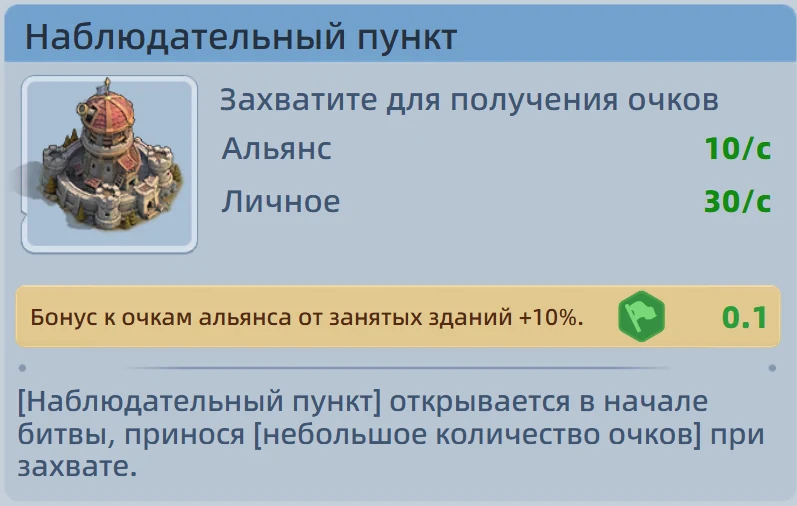
Наблюдательный пункт
Открывается в начале битвы. Захват даёт +10% к очкам альянса от всех занятых нами зданий.
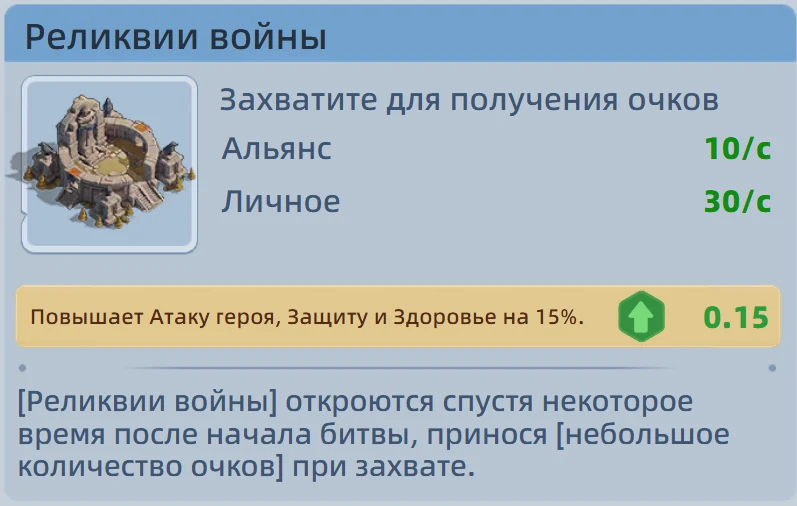
Реликвии войны
Открываются на 10-й минуте. Пока они наши, у наших героев +15% атаки, защиты и здоровья.
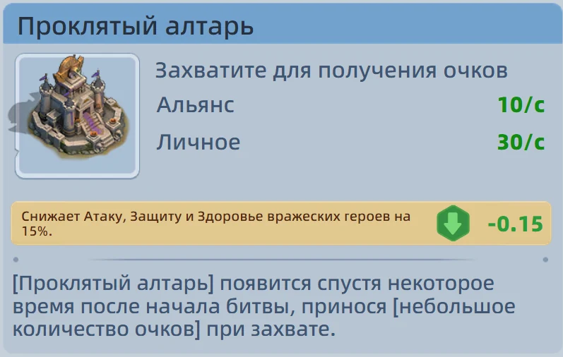
Проклятый алтарь
Открывается на 10-й минуте. Пока он наш, у вражеских героев −15% атаки, защиты и здоровья. Если враг сильнее — алтарь наш главный шанс.
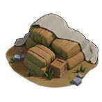
Лагеря и аптечки
С 13-й минуты отправляй самые слабые отряды в лагеря за травами — это очки. Вокруг захваченных зданий появляются аптечки — подбирать их тоже дают очки.
Карта события — по шагам
Это окно самой игры «Руководство» (в окне события — кнопка «Правила», значок «!»). Листаешь стрелками — на карте подсвечиваются здания по очереди.

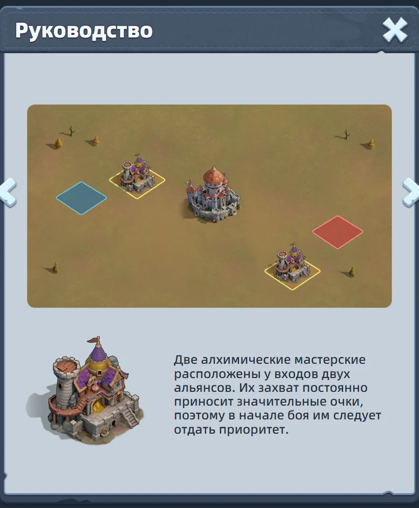


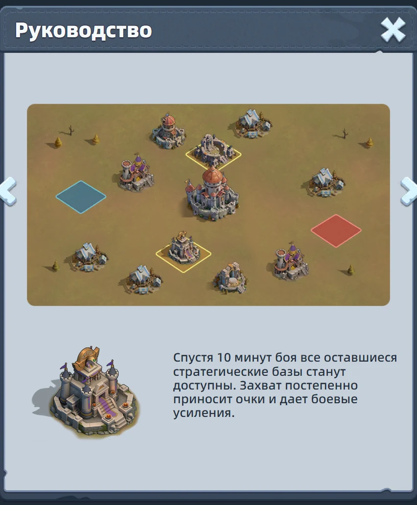


Тактика — как выиграть
Серое здание — ничьё: просто отправь отряд. Красное — вражеское: сначала выбей их штурмом. Одиночная атака на занятое здание сливает войска.
Чем больше наших отрядов внутри, тем сложнее врагу его отбить.
Команда 1: Алхимическая мастерская, Врата миграции, с 10-й минуты — Замок эликсира. Команда 2: Лечебные палатки (держать хотя бы 2 из 4) и Проклятый алтарь. Если нас 15 и больше — третья команда жжёт города врага.
Не ставь лечение на всё сразу: лечи столько, сколько закроют твои ускорения, иначе они зависнут.

Главная хитрость — жечь города врага.
У каждого города в событии прочность 5 000. Каждая удачная атака снимает 1 000. После 5 атак город врага улетает на его базу — вместе со всеми его отрядами. Если он держал здание, его отряды оттуда исчезают, и здание можно занять без боя.
Почти никто не держит войска на стене, поэтому даже слабый игрок может «сжечь» сильного. Переезд по карте — раз в 3 минуты, и сожжённый игрок ждёт, пока мы набираем очки.
Поиск вора
Три дня (со среды по пятницу, раз в две недели) на карте появляются золотые воры. Ты ловишь их — получаешь львиные монеты и тратишь в магазине события. Здесь же хорошие награды для Ворона: эссенция и снаряжение.
Где найти — по шагам
Значок «Особое событие»
Справа на главном экране, в столбике круглых значков — второй сверху (с галочкой на планшете). Откроется окно «Событие» с вкладками сверху.

Вкладка «Поиск вора»
Сверху — сколько осталось до конца события. Посередине переключатель «Мое открытие» / «Открытие альянса». Внизу кнопки «Поиск» (ближайший золотой вор) и «Поиск босса» (главарь воров). Справа — «Награда», «Журнал», «Магазин обмена» и «Ранг».
Что делать
«Особые события» → «Поиск вора». В окне есть поиск ближайшего вора — нажми, и игра покажет, куда идти.
Отправляй на них отряды. Воры бывают разного уровня — бери тех, кто тебе по силам.
После нескольких пойманных воров может появиться главарь. Он намного сильнее — бейте его вместе. Рейтинг события считают по урону главарю.
Награды за рейтинг приходят на почту после конца события. Награду за участие получают все.
Сырная ловушка
Альянс ставит ловушку с сыром, в неё попадается Крыса-вор, и все бьют её штурмами. Чем больше урона — тем лучше награды каждому и всему альянсу. Хороший источник противоядия и материалов Ворона.
Где найти — по шагам
Значок «Особое событие»
Справа на главном экране, в столбике круглых значков — второй сверху (с галочкой на планшете). Откроется окно «Событие» с вкладками сверху.

Вкладка «Сырная ловушка»
Переключатель «Сырная ловушка I» / «Сырная ловушка II», ниже «Данные бонуса» — уровень усиления от взносов и прибавка к урону. Внизу: «Награда», большая кнопка «Обзор» (переносит к ловушке на карте) и «Взнос» — справа внизу, туда кладут Мышиную приманку.
Как это устроено
R4 или R5 выбирают ловушку I или II, уровень и время начала. Выбрали одну — вторая блокируется. Нужно минимум 20 участников. Если не назначить до 22:00 по игре (03:00 МСК) в последний день — ловушка пропадёт.
Нажми на ловушку → «Взнос». За это ты получаешь монеты альянса, а ловушка — больше урона. До лимита усиление растёт, после — дают только монеты.
Крыса попадается, и у альянса 30 минут. Бить её можно только штурмами.
У Крысы 5 фаз, пятая бесконечная — бей, пока идёт время.
Тактика, которая даёт больше всего урона: создавай штурм своим самым слабым отрядом, а самым сильным присоединяйся к чужим штурмам. Так штурмов становится много, слабый отряд почти ничего не теряет, а сильный бьёт чаще.
Штурмы, которые начинают R4 (или их представитель), бьют Крысу сильнее. Если ты не в игре, твой самый сильный отряд сам вступит в штурм за 20 секунд до конца, если там есть место.
Личный урон
Нажми на ловушку → «Ранг»: видно, сколько урона нужно и сколько ты нанёс. Добил до нужной планки — получаешь в 10 раз больше наград.
Сложность
Каждый новый уровень Крысы примерно в 4 раза сложнее. Повышайте уровень с умом: войск теряется больше.
Лечение
После каждой атаки лечи войска, чтобы лазарет не переполнился. С помощью альянса это быстро.
Король демонов (мировой босс)
Где найти — по шагам
Значок «Особое событие»
Справа на главном экране, в столбике круглых значков — второй сверху (с галочкой на планшете). Откроется окно «Событие» с вкладками сверху.

Вкладка «Король Демонов: Колдун скверны»
Вкладка называется по сегодняшнему боссу: «Колдун скверны», «Рейнджер скверны» или «Воин скверны». В окне — сколько до конца дня, какой фракции обещан бонус, «Осталось атак» и кнопка «Бой»: она переносит к боссу на карте.
Босс на карте мира. Нужно Святилище 8 уровня и выше. 10 атак в день, штурмы нельзя — бьёшь только сам. Рейтинг дня считается по твоему самому сильному одному удару. За число атак тоже дают награды.
Король демонов не бьёт в ответ, поэтому танки против него не нужны — только урон.
| День | Король демонов | Бей героями |
|---|---|---|
| Пн, Чт |  Колдун скверны Колдун скверны | Воинами |
| Вт, Пт | Рейнджер скверны | Колдунами |
| Ср, Сб | Воин скверны | Рейнджерами |
Какая фракция бьёт сильнее — написано в самой игре, в правилах события. А вот насколько сильнее, игра не пишет: цифра «+50%» ходит по гайдам игроков, но подтвердить её по игре не удалось. Фракцию соблюдай обязательно, а на точный процент не опирайся.
Как собрать отряд — в разделе Отряды → Король демонов.
Фишка: если твой отряд долго идёт куда-то далеко, отправь его в атаку на Короля демонов — путь до демона и обратно сократится до 30 секунд. Так можно быстро вернуть отряд домой.
Перед ударом разведай любую цель — включится «Боевое безумие», и удар будет сильнее. Проверь, что оно горит, и бей.
Во время КвК урон 200 лучших игроков сервера складывается. Сервер с большим уроном получает 250 000 очков.
Теневая скверна
Где найти — по шагам
Значок «Особое событие»
Справа на главном экране, в столбике круглых значков — второй сверху (с галочкой на планшете). Откроется окно «Событие» с вкладками сверху.
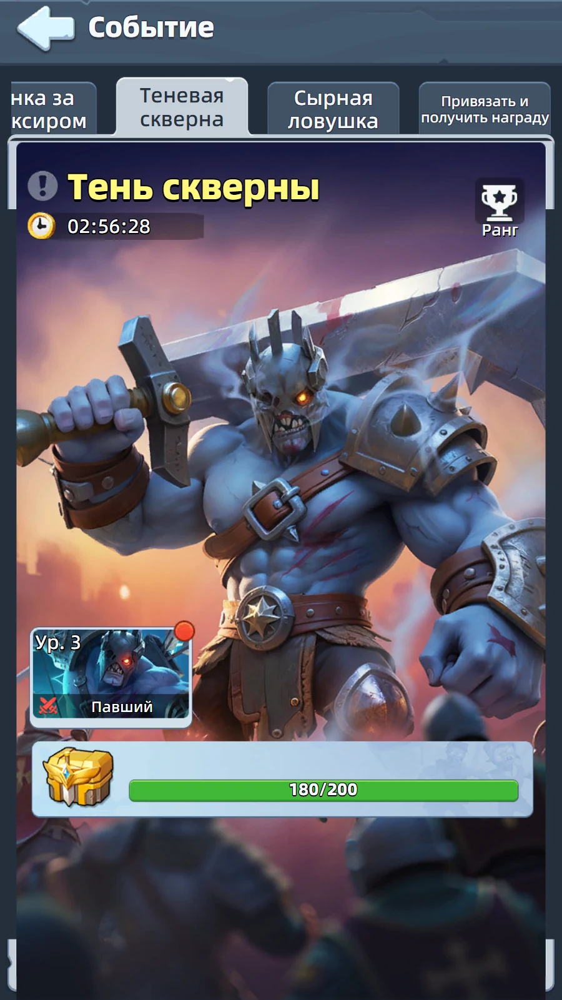
Вкладка «Теневая скверна»
Заголовок окна в игре — «Тень скверны». Сверху отсчёт до конца захода, внизу — какой босс сейчас на карте и сколько у него здоровья. Справа — «Ранг».
Что важно знать
Это отдельное событие, а не обычный Король демонов. В игре у него своё окно, свои награды и своя почта («Теневая скверна — Награда за убийство»).
Когда: понедельник и четверг, четыре захода в сутки — в 00:00, 06:00, 12:00 и 18:00 по времени сервера (это 05:00, 11:00, 17:00 и 23:00 по Москве). Каждый заход босс стоит на карте 3 часа, потом исчезает до следующего.
Чем отличается от обычного: здесь 5 атак в день, а не 10. Штурм так же запрещён, нужно Святилище 8. Ранг — по самому сильному одному удару за день.
Следить за боссом удобнее через само окно события: там видно «Осталось атак» и обратный отсчёт до следующего появления.
Одна странность, проверь в игре. В правилах этого события написано, что доп. урон наносят Воины, хотя выходит Рейнджер скверны — а Рейнджера везде в игре контрят Колдуны. Та же нестыковка и в английской версии, то есть это похоже на опечатку разработчиков. Перед боем глянь в окне события, какой фракции обещан бонус, и собери отряд по нему.
Охотничий бой
Где найти — по шагам
Значок «Особое событие»
Справа на главном экране, в столбике круглых значков — второй сверху (с галочкой на планшете). Откроется окно «Событие» с вкладками сверху.
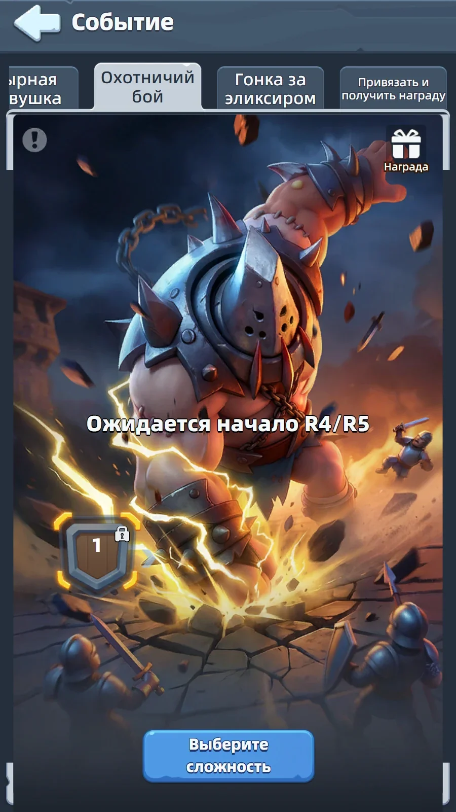
Вкладка «Охотничий бой»
Пока R4/R5 не начали, в окне написано «Ожидается начало R4/R5». Лидер жмёт «Выберите сложность» — внизу посередине, выбирает уровень, и бой стартует. Над кнопкой — «Обзор награды».
Как идёт бой
Запускают R4 или R5, и только если в альянсе больше 20 участников. За одно событие альянс может начать бой один раз и выбрать только один уровень сложности — переиграть нельзя.
После запуска даётся 5 минут на подготовку: на территории альянса появляются скопления скверны. Потом идут 5 волн, каждая следующая сложнее. Чем больше скверны успели перебить, тем лучше награды.
Важная поблажка: в этом событии время марша и возвращения войск фиксированное — 15 секунд. Поэтому участвовать можно, даже если твой город стоит далеко от территории альянса. Переезжать не надо.
- Кнопка события слева вверху быстро находит цель.
- Не бегите всем альянсом на одну цель.
- Лечите солдат между волнами.
- После 5-й волны заберите награду в «Особых событиях».
Осада нежити
Где найти — по шагам
Значок «Особое событие»
Справа на главном экране, в столбике круглых значков — второй сверху (с галочкой на планшете). Откроется окно «Событие» с вкладками сверху.
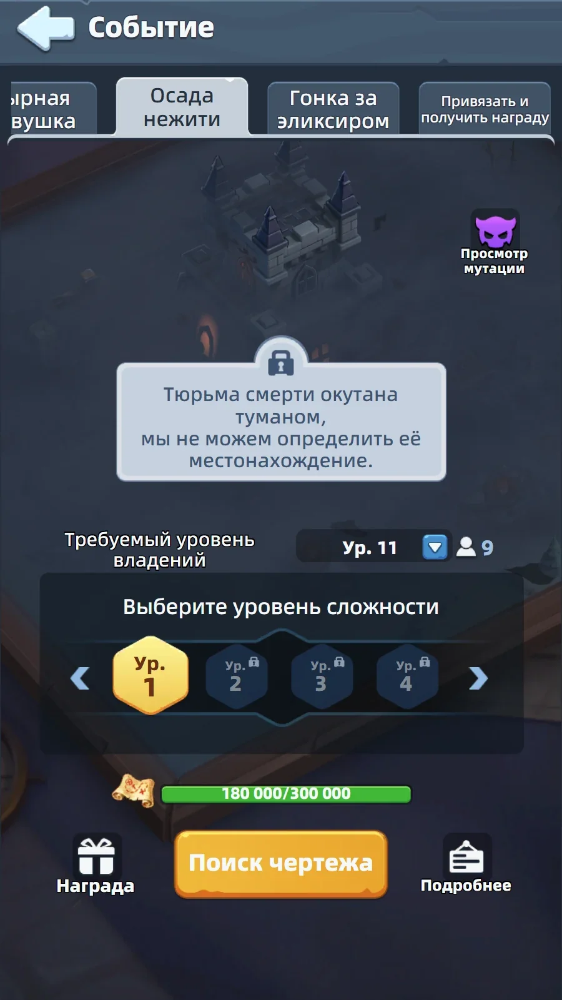
Вкладка «Осада нежити»
Пока тюрьма не найдена, в окне написано «Тюрьма смерти окутана туманом». Ниже — «Требуемый уровень владений», выбор сложности и полоса улик (сколько собрано из нужных). Внизу: «Награда», жёлтая кнопка и «Подробнее».
Как это устроено
За задания сокола альянс копит «Тюремные улики». Набрали 300 000 — R4/R5 запускают событие (раз в 2 дня). На город каждого волнами нападают монстры, до 20 волн.
Щиты не работают. Твои отряды должны стоять на стене — прорвали оборону, и для тебя событие кончилось. Прорванные могут слать подкрепление другим.
Важно: перед днём набега в Дуэли отряды со стены убирают, а к Осаде нужно вернуть — не забудь.
Блуждающий фантом
Где найти — по шагам
Значок «Особое событие»
Справа на главном экране, в столбике круглых значков — второй сверху (с галочкой на планшете). Откроется окно «Событие» с вкладками сверху.
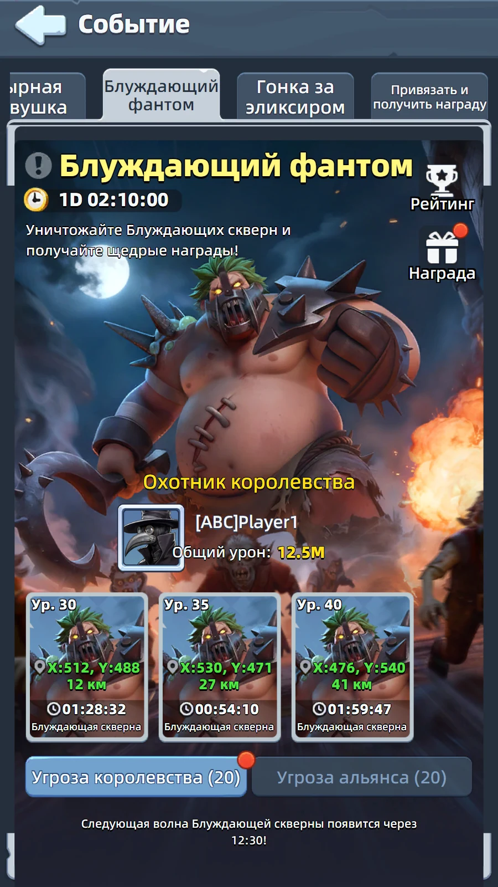
Вкладка «Блуждающий фантом»
Сверху — сколько длится событие. «Охотник королевства» — игрок, нанёсший больше всех урона. Ниже список Блуждающих скверн на карте: уровень, расстояние, сколько ей осталось жить и координаты — нажми на неё, чтобы перейти. Вкладки «Угроза королевства» и «Угроза альянса». В самом низу — когда появится следующая волна.
Что важно знать
Длится 1 день. Нужно Святилище 8 уровня. Бьёшь Блуждающую скверну — огромного монстра, который гуляет по карте и нападает на города.
Если она прорвёт твою оборону, город останется на месте (его не выкинет), а потери среди простаивающих войск будут меньше обычного. Награду за первое убийство можно взять до 3 раз за событие.
Внизу окна события — список таких монстров на сервере, новые появляются каждые 10 минут. Не бей тех, кто тебе не по силам.
Битва на выживание
Каждый день в 00:00 по игре (05:00 МСК) игра собирает тебя в группу с 12–20 игроками похожего уровня Святилища. Сутки поделены на раунды по 4 часа, у каждого своя тема. Набираешь очки темы — открываешь награды. 1-е место в группе во время КвК даёт серверу 2 200 очков.
| Тема раунда | За что дают очки |
|---|---|
 Усиление Ворона Усиление Ворона | 10 вороньих плодов — 1 очко; 1 энергия — 100 очков |
 Усиление героев Усиление героев | Найм героя — 400; каждые 1 950 противоядия — 1 |
 Развитие владений Развитие владений | 1 минута ускорения стройки — 10; +1 мощь здания — 1 |
 Обучение войск Обучение войск | 1 минута ускорения обучения — 10; 1 солдат — 22 |
 Исследование технологий Исследование технологий | 1 минута ускорения исследований — 10; +1 мощь технологий — 1 |
Совмещай с Дуэлью альянсов. Тратишь вещи дня Дуэли в раунд Битвы с той же темой — очки идут в оба события. Например, в понедельник корми Ворона именно в раунд «Усиление Ворона».

Не выполняй все задания Битвы каждый день без разбора — на Дуэль ничего не останется. В каждом раунде 4 награды, а за 2, 8 и 18 наград за день открываются дополнительные сундуки.
Ответы на вопросы Викторины
Ответы, которые засчитывает игра (собрали игроки). Нажми Ctrl+F и введи начало вопроса, чтобы быстро найти.
Два ответа про фракции здесь отличаются от того, как работает бой. В бою: Воины сильнее Колдунов, Колдуны сильнее Рейнджеров, Рейнджеры сильнее Воинов. А в Викторине отвечай так, как написано в таблице — так её засчитывает игра.
| Вопрос | Ответ |
|---|---|
| Как повысить мощность отряда после неудачной экспедиции? | Оба варианта |
| Что ограничивает уровень навыков героя? | Звёздный рейтинг героя |
| Какой интервал между двумя ежедневными получениями энергии? | 4 часа |
| Какие способы не повышают мощь отряда после поражения? | Нанять выживших |
| За что отвечает слот Каравана? | Численность отряда |
| Какая еженедельная тема Дуэли альянсов по понедельникам? | Усиление ворона |
| Что из перечисленного можно получить путём повышения? | Усиление клиники |
| Каково основное применение посоха чумного доктора? | Удерживать дистанцию от пациентов |
| Какова вероятность получения SSR-награды в найме героев? | 0.17 |
| Что произойдёт с заражёнными без своевременного лечения? | Скверна |
| Какой из перечисленных героев относится к качеству UR? | Селия |
| Артура (танк) следует размещать в тылу строя | Неверно |
| Количество солдат не ограничено | Неверно |
| Для чего нужно противоядие? | Улучшение и усиление героя |
| Как можно получить медные монеты? | Сбор в святилище |
| В какие дни событие Дуэль альянсов не проводится? | Воскресенье |
| Какова роль Ворона в игре? | Все перечисленное |
| Какова цель пожертвования Мышиной приманки в событии «Сырная ловушка»? | Повышает урон игрока |
| Какой особый наряд носили в Средние века для предотвращения Скверны? | Одеяние Чумного доктора |
| Против героев какой фракции Чернокнижники наиболее эффективны? | Воин |
| Как воинам передаётся скверна? | Укус блохи |
| На каком VIP-уровне открывается быстрое испытание в Битве экспедиции? | 8 |
| Какой класс у Шэдоу в игре? | Танк |
| Кто стоит за атаками чёрных крыс на город? | Чёрный маг |
| Кто виноват в тяжёлом ранении и заражении Селии? | Крысиный король |
| Где производится игровое Противоядие? | Мастерская противоядий |
| Сколько часов длится каждая Битва на выживание в игре? | 4 часа |
| Сколько минут длится Гонка за эликсиром? | 30 минут |
| На каком VIP-уровне открывается суперрежим Секретных операций? | 12 |
| Какая еженедельная тема Дуэли альянсов по средам? | Изучение технологии |
| Сколько секретных операций может одновременно выполнить каждая экспедиционная очередь? | 4 |
| Каковы преимущества высокого уровня казармы? | Увеличить лимит солдат |
| Какой цвет редкости снаряжения даёт наибольший прирост к мощи героя? | UR |
| Что является доказательством статуса мэра в игре? | Перстень-перчатка |
| Какие награды Заданий может улучшить выжившая Фрея? | Задание сокола |
| Для чего нужны Реликвии? | Оба варианта |
| Что ограничивает максимальный уровень героя? | Уровень святилища |
| Какие усиления не открываются с повышением VIP-уровня? | Улучшение характеристик солдат |
| Для чего используются предметы из Ткацкой мастерской? | Создание снаряжения |
| Против героев какой фракции сильны воины? | Рейнджер |
| Какое снаряжение производит Камень снаряжения? | Плавильный цех |
| Как подбирать героев для максимального урона при формировании строя? | 5 участников из одной фракции |
| К какой фракции принадлежит Марлена? | Воин |
| На каком VIP-уровне открывается автоотправка для Секретных операций? | 6 |
| Какие бонусы могут дать союзники по альянсу? | Оба варианта |
| Что делать при нехватке ресурсов для улучшения построек/технологий? | Все перечисленное |
| Занимает ли Тайная операция ячейку похода? | Нет |
| Что даёт казарма более высокого уровня? | Увеличивает вместимость казарм |
| Изучение технологии Дуэли альянсов повышает очки, получаемые в Дуэли альянсов | Верно |
| Какая еженедельная тема Дуэли альянсов по четвергам? | Усиление героев |
| Как улучшить награды, получаемые в Лагере исследователя? | Проходить больше этапов |
| Кто управляет чёрными крысами и нападает на город? | Чёрный маг |
Долина Кристальных Гроздей
По воскресеньям слева внизу на главном экране появляется кнопка в виде кристалла. Нажми её в нужное время — переместишься на отдельную карту события. Там 30 минут. Задача — набрать как можно больше очищенных кристаллов  : по их количеству считают рейтинг и награды.
: по их количеству считают рейтинг и награды.
Очищенный кристалл — очки, за них рейтинг. 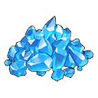
Кристалл навыка — падает с чумных крыс, на него учат навыки долины. Навыки действуют только в долине и сбрасываются к следующему разу.Что делать — по минутам
В долине живут два вида чумных крыс. За каждую дают кристаллы навыков. Чем раньше наберёшь кристаллы навыков, тем раньше выучишь навыки, которые ускоряют весь сбор.
Скопления бывают 1–3 уровня: чем выше уровень, тем быстрее идут кристаллы. Свободное скопление охраняют защитники — разбей их, и отряд начнёт собирать. Скопление, которое собирает другой игрок (даже соратник), можно отбить — тогда его собранные кристаллы рассыплются осколками вокруг.
Шестью волнами (на 10-й, 11-й, 12-й, 20-й, 21-й и 22-й минуте) появляются особые скопления, с которых кристаллы добываются очень быстро. Держи свободный отряд, чтобы успеть к ним.
Первые 23 минуты она под защитой, потом её могут захватывать все — но каждый игрок шлёт туда только одну команду. 10 лучших по рейтингу захвата получают большую пачку очищенных кристаллов прямо в итог.
Не лезь много раз туда, где проигрываешь. Каждая неудачная попытка отбить скопление даёт герою «провал». Провалы копятся, и после нескольких подряд герой получает ослабление. Провалы проходят со временем: таймер кончился — минус один.
Навыки долины — что выбрать
На каждом уровне — два навыка, выбрать можно только один. Уровни 1–4 — пассивные (работают сами после изучения), 5-й уровень — активный, его надо нажимать вручную. Учатся за кристаллы навыков.
| Уровень | Навык 1 | Навык 2 |
|---|---|---|
| 1 | Всплеск кристалла — периодически даёт 1 080 очищенных кристаллов | Охотник на чумных крыс — +1 500 кристаллов за каждую убитую чумную крысу |
| 2 | Увеличение силы — вместимость похода героя +50 | Быстрый марш — скорость похода в долине +25% |
| 3 | Разграбление в долине — +5 000 очищенных кристаллов при захвате жилы (раз в 60 сек.) | Дозор в долине — +5 000 очищенных кристаллов при неудачной попытке захвата (раз в 60 сек.) |
| 4 | Добыча кристаллов — сбор со скоплений быстрее на 15% | Стальная воля — ослабления короче на 30 сек. |
| 5 | Пробуждение долины (нажать) — урон героя +15% на 60 сек., перезарядка 300 сек. | Резонанс кристалла (нажать) — сбор со скоплений +50% на 60 сек., перезарядка 300 сек. |
Названия и цифры — из самой игры. Если ты в основном собираешь — бери навыки на сбор (Всплеск, Быстрый марш, Добыча, Резонанс). Если отбиваешь скопления у других — Разграбление и Пробуждение долины.
Остальные события
Опыт пандемии (сиделки)
Длится 3 дня. В начале выбираешь сложность. Задача — убить 30 сиделок, с 1 по 30 уровень (кнопка сиделок слева внизу во время события).
Чем больше игроков альянса убьют всех своих сиделок, тем больше уровней Доктора-крысы откроется для альянса — его бьют штурмами в назначенное R4/R5 время.
Если прошлый уровень дался с трудом — не повышай сложность, можно вообще не пройти.
Завоевание каньона
В «Особых событиях» справа вверху. От тебя нужно только записаться и расставить войска — лучше на центральную линию, лидеры потом переставят. Бои идут сами, без тебя.
Чтобы попасть: состоять в альянсе, территория 10 уровня и выше, и чтобы в альянсе записалось минимум 15 человек — иначе альянсу вообще не дадут места.
Войска здесь не гибнут и очередь экспедиции не занимают, так что записываться безопасно. Награду получают все записавшиеся, даже те, кто не расставил войска.
Сражаются топ-15 записанных на каждой линии, остальные просто получают награды. Чтобы победить, нужно выиграть 2 линии из 3.
Улучшение снаряжения
По субботам и воскресеньям (одна награда на два дня). Задача — улучшать снаряжение героев. Лёгкое и обязательное: копи камни снаряжения на выходные.
Торговец-отшельник
Магазин за монеты события. Монеты дают в соседней вкладке «Загадка отшельника»: карта из 15 заданий на 7 дней (ряд или столбец целиком — открывает сундук, все 15 — супер-сундук). Потом там же «Путь отшельника» — монеты за задания сокола, секретные операции и монстров.
- Первый товар всегда бесплатный, второй и третий — со скидкой.
- Магазин можно обновить ещё 8 раз в день: 2 бесплатно, потом +10 кристаллов за каждые 2 (всего 120). После каждого обновления — снова бесплатный товар.
- Самое ценное — сундуки для пробуждения героев и их оружия.
События первой недели нового игрока
Лечебное событие (7 дней): левая ветка наград — бесплатная, правая — платная. Битва на выживание открывается с 3-го дня. Финальный рассвет — нужно 4,6 млн мощи за неделю, бесплатным игрокам — забирать то, что получается.
Праздничные события
На праздники игра включает целый набор событий сразу — они появляются отдельной кнопкой праздника на главном экране, справа в столбике значков. Устроены все праздники одинаково, меняются только названия и предметы. Ниже — что в каждом наборе, словами самой игры.
Как устроен любой праздник — 5 частей
Пряники, маски, рыба, кексы — их «собирайте в Соколиной башне, с ресурсных монстров, элитной скверны, тайных отрядов и блуждающей скверны». Есть дневной лимит; неиспользованный лимит переносится на следующий день.
Собранное сдаёшь в общее событие (пир, дегустация, примерка наряда, карнавал). Шкала общая для всего сервера: набрали опыт все вместе — уровень растёт, и награды уровня забирают все.
Тратишь монеты события на розыгрыш, за каждый розыгрыш — очки и награды фаз. Режим 5x тратит в 5 раз больше монет и даёт в 5 раз больше. Неиспользованные монеты после конца превращаются в ускорения: 1 монета = 30 универсальных ускорений по 1 минуте.
Обмен валюты события (шляпы, знаки, пиратское золото) на предметы. Валюту дают розыгрыш и наборы.
Ежедневные задания дают очки и награды; забытые награды за день приходят на почту на следующий день. Эпические и мифические награды пропуска — платные.
Нажимаешь карты — они попадают в 7 ячеек, три одинаковые исчезают. Помогают «Удалить», «Вернуть», «Обновить». Заполнились все 7 ячеек — этап провален.
Хэллоуин
«Бал-маскарад» — поле из 26 клеток, кубики за Хэллоуинские монеты; клетки предметов растут в уровне, на поле появляются «Благословенные сундуки бала».
Ещё: «Сладость или гадость» (задания за конфеты), «Создание масок» → «Примерка наряда» (общая шкала), «Хэллоуинский базар» (обмен Волшебных шляп), «Сокровища фантома» (три карты), «Хэллоуинское печенье».
Праздник луны (Ночь полнолуния)
«Звездная клятва» — розыгрыш за Лунные монеты. «Выпечка лунных пряников» → «Дегустация лунных пряников» (общая шкала), «Звездный базар» (обмен звездно-лунных знаков), «Эликсир Нефритового кролика» (задания), «Тайна лунной тени» (три карты), «Пожелание Нефритового кролика».
В 2026 году праздник луны начался 21 сентября.
Пиратский праздник
«Пиратская игра» — розыгрыш за Якорные монеты. «Лакомая охота» (морская рыба) → «Великий пир» (общая шкала), «Пиратский рынок» (обмен Пиратского золота), «Пиратское мифическое сокровище» (задания за кортики), «Зарытый клад» (три карты), «Дар морских глубин».
Пасха
«Охота за пасхальными яйцами» — 7 дней, каждый день новый набор с золотым молотом; молотом разбиваешь яйцо, всего 7 призов, повторов нет. Неиспользованные удары сгорают.
Ещё: «Празднование Пасхи» (задания и уровни) и «Рынок искусств» (обмен карт цветов).
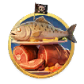
Праздник банкета
«Утерянная карта» — задания за Игральные карты. «Ларец чудесных игрушек» (7 дней, Игрушечные ключи открывают ларцы, внутри Чашки) → «Чайный рынок» (обмен Чашек). «Подготовка банкета» (Кексы) → «Романтический банкет» (общая шкала).
Рождество и Новый год
Рождество: «Рождественский карнавал» (сдаёшь Рождественские огни — общая шкала сервера), «Защита подарков» (бьёшь Рождественского вора и Рождественских Эльфов предметами события), «Рождественский пропуск», «Рождественский магазин».
Новый год: «Новогодний салют» (запускаешь фейерверки, на 100% энергии — фейерверк-шоу со случайной наградой), «Новогодний праздник» (задания за очки), «Новогодний пропуск», «Новогодний магазин».

Главное правило праздников: праздничные монеты не пропадают даром — после конца они сами превращаются в ускорения. А вот праздничные предметы для сдачи и удары молотом сгорают: сдавай их до конца события.
Ещё события, которые встречаются в игре
Эти события есть в самой игре, но в гайдах про них почти не пишут. Всё ниже сверено с текстом внутри игры, а не с чужими сайтами.
Осквернённая графиня
Это не отдельное событие: графиня появляется на карте во время события «День охоты Селии» (оно ниже). У неё 12 уровней, с 1-го по 12-й.
Как найти: нажми лупу («Поиск») слева внизу и выбери в списке целей «Осквернённая графиня» — игра отвезёт к ближайшей.
Как бить: только штурмом. В одиночку на неё не ходят: это полноценный альянсовый монстр, а не обычная скверна.
Уровень бери по силам альянса: каждый следующий заметно крепче.
Колесо желаний
Рулетка. Крутишь её за «Монеты желаний» — это отдельный предмет, он так и называется и нужен только здесь.
Есть дневной лимит попыток: игра покажет «Суточные попытки: 3» и не даст крутить больше. Исчерпал — напишет «Дневной лимит розыгрышей исчерпан».
Выигрыш крупного приза объявляется в чате всему серверу.
Рядом бывает «Благословенное колесо» — то же самое, но за «Монеты благословения». Это разные колёса и разные монеты, не путай.
День охоты Селии
Событие про истребление скверны. Игра пишет: «Объедините силы с Селией, чтобы искоренить зло. Выполняйте задания штурма, чтобы получить редкие награды».
Что делать: бить скверну с 1 по 20 уровень штурмами. За выполнение целей открывается «Сундук Селии» и бонусная награда сверху.
Смотреть прогресс и забирать награды — в окне события, кнопки «Вперёд» (прыгнуть к цели) и «Получить».
Это не «Охотничий бой»: тот запускают R4/R5 на территории альянса, а этот идёт сам по себе.
Шахта гномов
Копаешь вниз по этажам. Одна раскопка = одна гномья кирка; кирки дают за задания, задания обновляются каждый день в 00:00 по серверу (05:00 МСК).
Главное правило: перед раскопками выбери награду для текущего этажа — иначе копаешь вслепую.
Чем больше копаешь на одном этаже, тем выше шанс особой награды: после 3 раскопок он растёт в 5 раз, после 6 — в 10, после 9 — в 30. А на некоторых этажах следующая раскопка даёт особую награду гарантированно.
Отдельные награды на этажах 5, 10, 20, 30, 40, 60, 80 и 100. Глубина события — до 200 этажа.
Неожиданная встреча
Приключение за алмазы. Одно приключение в день бесплатное — его стоит делать всегда.
Каждое приключение точно даёт предмет и может дать сундук-сюрприз. Сундуки открываются за «эмблемы сюрприза», при открытии есть 5% шанс удвоить награду.
Ловушка: держать можно не больше 4 неоткрытых сундуков. Набрал 4 — новые перестают выпадать, и бесплатные приключения тратятся впустую. Открывай вовремя.
Два события-магазина — туда ходят только за донат
Странный базар
«Странные монеты» дают за покупку наборов за деньги, потом меняешь их на предметы. Неистраченные монеты не сгорают и останутся до следующего раза.
Бесплатному игроку здесь делать нечего, но и терять ничего не надо: монеты сохранятся.
Клинки наголо
То же самое: «Каменные клинки» дают за покупку наборов, наборы обновляются каждый день в 00:00 по серверу. Покупка даёт столько же VIP-очков, сколько обычные алмазные наборы.